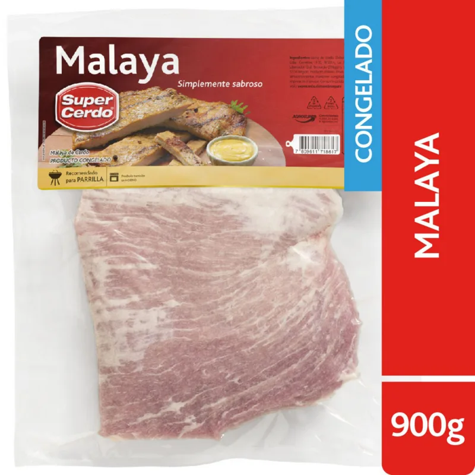

RecetaReceta · Para el fin de semana
Arrollado de malaya de cerdo
El arrollado casero de la familia: malaya de cerdo aliñada con ajo, comino y ají de color, rellena con zanahoria y pimentón, enrollada y cocida lento al horno hasta quedar tierna.
- Rinde: 4 a 5 porciones
- Preparación: 20 minutos
- Cocción: 1 hora y 45 minutos
- Dificultad: Media
 Pollo
Pollo